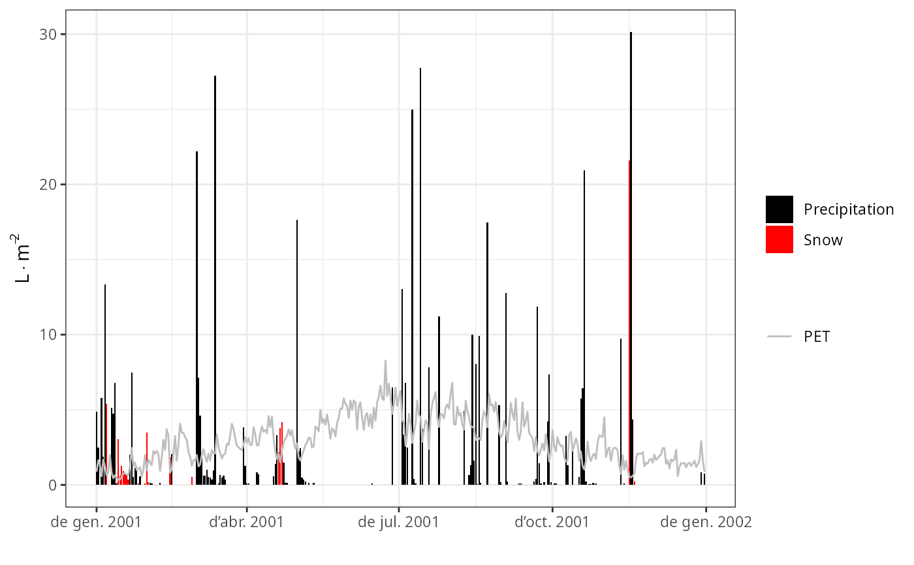

Function plot plots time series of the results of the soil plant water balance model (see spwb),
plant water balance model (see pwb), the forest growth model (see growth)
or the forest dynamics model (see fordyn).
Usage
# S3 method for class 'spwb'
plot(
x,
type = "PET_Precipitation",
cohorts = NULL,
bySpecies = FALSE,
dates = NULL,
subdaily = FALSE,
xlim = NULL,
ylim = NULL,
xlab = NULL,
ylab = NULL,
summary.freq = NULL,
...
)
# S3 method for class 'pwb'
plot(
x,
type = "PlantTranspiration",
cohorts = NULL,
bySpecies = FALSE,
dates = NULL,
subdaily = FALSE,
xlim = NULL,
ylim = NULL,
xlab = NULL,
ylab = NULL,
summary.freq = NULL,
...
)
# S3 method for class 'growth'
plot(
x,
type = "PET_Precipitation",
cohorts = NULL,
bySpecies = FALSE,
dates = NULL,
subdaily = FALSE,
xlim = NULL,
ylim = NULL,
xlab = NULL,
ylab = NULL,
summary.freq = NULL,
...
)
# S3 method for class 'fordyn'
plot(
x,
type = "StandBasalArea",
cohorts = NULL,
bySpecies = FALSE,
dates = NULL,
xlim = NULL,
ylim = NULL,
xlab = NULL,
ylab = NULL,
summary.freq = NULL,
...
)Arguments
- x
An object of class
spwb,pwb,growthorfordyn.- type
The information to be plotted (see details)
- cohorts
An integer, boolean or character vector to select the plant cohorts to be plotted. If
cohorts = "T"(resp.cohorts = "S") then all tree (resp. shrub) cohorts will be displayed.- bySpecies
Allows aggregating output by species, before drawing plots (only has an effect with some values of
type). Aggregation can involve a sum (as for plant lai or transpiration) or a LAI-weighted mean (as for plant stress or plant water potential), where LAI values are those ofLAIlive.- dates
A Date vector with a subset of dates to be plotted.
- subdaily
Whether subdaily results should be shown, only for simulations using
transpirationMode = "Sperry"and having setsubdailyResults = TRUEin the simulation control object. Ifsubdaily = TRUE, then the valid strings fortypeare listed inplot.spwb_day.- xlim
Range of values for x.
- ylim
Range of values for y.
- xlab
x-axis label.
- ylab
y-axis label.
- summary.freq
Frequency of summary statistics (see
cut.Date).- ...
Additional parameters for function
plot(not used).
Details
The following plots are currently available for spwb (most of them also for pwb):
"PET_Precipitation": Potential evapotranspiration and Precipitation."PET_NetRain": Potential evapotranspiration and Net rainfall."Snow": Snow precipitation and snowpack dynamics."Export": Water exported through deep drainage and surface runoff."Evapotranspiration": Plant transpiration and soil evaporation."SoilPsi": Soil water potential."SoilRWC": Soil relative water content (in percent of field capacity)."SoilTheta": Soil moisture water content (in percent volume)."SoilVol": Soil water volumetric content (in mm)."PlantExtraction": Water extracted by plants from each soil layer."HydraulicRedistribution": Water added to each soil layer coming from other soil layers, transported through the plant hydraulic network."LAI": Expanded and dead leaf area index of the whole stand."PlantLAI": Plant cohort leaf area index (expanded leaves)."PlantLAIlive": Plant cohort leaf area index ("live" leaves)."PlantStress": Plant cohort average daily drought stress."PlantTranspiration": Plant cohort transpiration."TranspirationPerLeaf": Plant cohort transpiration per leaf area."PlantGrossPhotosynthesis": Plant cohort photosynthesis."GrossPhotosynthesisPerLeaf": Plant cohort photosynthesis per leaf area."StemRWC": Average daily stem relative water content."LeafRWC": Average daily leaf relative water content."LFMC": Live fuel moisture content.
The following plots are available for spwb and pwb only if transpirationMode = "Granier":
"PlantPsi": Plant cohort water potential."FPAR": Fraction of PAR at the canopy level of each plant cohort."AbsorbedSWRFraction": Fraction of SWR absorbed by each plant cohort.
The following plots are available for spwb and pwb only if transpirationMode = "Sperry":
"SoilPlantConductance": Average instantaneous overall soil plant conductance (calculated as the derivative of the supply function)."LeafPsiMin": Midday leaf water potential."LeafPsiMax": Pre-dawn leaf water potential."LeafPsiRange": Range of leaf water potential."LeafPsiMin_SL": Minimum water potential of sunlit leaves."LeafPsiMax_SL": Maximum water potential of sunlit leaves."LeafPsiMin_SH": Minimum water potential of shade leaves."LeafPsiMax_SH": Maximum water potential of shade leaves."TempMin_SL": Minimum temperature of sunlit leaves."TempMax_SL": Maximum temperature of sunlit leaves."TempMin_SH": Minimum temperature of shade leaves."TempMax_SH": Maximum temperature of shade leaves."GSWMin_SL": Minimum stomatal conductance of sunlit leaves."GSWMax_SL": Maximum stomatal conductance of sunlit leaves."GSWMin_SH": Minimum stomatal conductance of shade leaves."GSWMax_SH": Maximum stomatal conductance of shade leaves."StemPsi": Midday (upper) stem water potential."RootPsi": Midday root crown water potential."PlantNetPhotosynthesis": Plant cohort net photosynthesis."NetPhotosynthesisPerLeaf": Plant cohort net photosynthesis per leaf area."PlantWUE": Plant cohort daily water use efficiency."PlantAbsorbedSWR": Plant cohort absorbed short wave radiation."AbsorbedSWRPerLeaf": Plant cohort absorbed short wave radiation per leaf area."PlantNetLWR": Plant cohort net long wave radiation."NetLWRPerLeaf": Plant cohort net long wave radiation per leaf area."AirTemperature": Minimum/maximum/mean daily temperatures above canopy."CanopyTemperature": Minimum/maximum/mean daily temperatures inside canopy."SoilTemperature": Minimum/maximum/mean daily temperatures inside the first soil layer."CanopyEnergyBalance": Canopy energy balance components."SoilEnergyBalance": Soil energy balance components.
In addition to the former, the following plots are available for objects growth or fordyn:
"CarbonBalance": Stand-level carbon balance components."BiomassBalance": Stand-level biomass balance components."GrossPhotosynthesis": Gross photosynthesis rate per dry weight."MaintenanceRespiration": Maintenance respiration cost per dry weight."PhotosynthesisMaintenanceRatio": The ratio of gross photosynthesis over maintenance respiration."RootExudation": Root exudation rate per dry weight."LabileCarbonBalance": Labile carbon balance per dry weight."SugarLeaf": Sugar concentration in leaves."StarchLeaf": Starch concentration in leaves."SugarSapwood": Sugar concentration in sapwood."StarchSapwood": Starch concentration in sapwood."SugarTransport": Phloem sugar transport rate."StructuralBiomassBalance": Daily structural biomass balance (g dry · ind-2)."LabileBiomassBalance": Daily labile biomass balance (g dry · ind-2)."PlantBiomassBalance": Daily plant biomass balance, i.e. labile change + structural change (g dry · ind-2)."MortalityBiomassLoss": Biomass loss due to mortality (g dry · m-2)."PlantBiomassBalance": Daily cohort biomass balance (including mortality) (g dry · m-2)."LeafBiomass": Leaf structural dry biomass per individual."SapwoodBiomass": Sapwood dry biomass per individual."FineRootBiomass": Fine root dry biomass per individual."SapwoodArea": Sapwood area per individual."LeafArea": Leaf area per individual."FineRootArea": Fine root area per individual (only fortranspirationMode = "Sperry"ortranspirationMode = "Sureau")."DBH": Diameter at breast height (in cm) for an average individual of each plant cohort."Height": Height (in cm) for an average individual of each plant cohort."SAgrowth": Sapwood area growth rate."LAgrowth": Leaf area growth rate."FRAgrowth": Fine root area growth rate (only fortranspirationMode = "Sperry"ortranspirationMode = "Sureau")."HuberValue": Ratio of leaf area to sapwood area."RootAreaLeafArea": Ratio of fine root area to leaf area (only fortranspirationMode = "Sperry"ortranspirationMode = "Sureau").
Finally, the following plots are only available for fordyn simulation results:
"StandBasalArea": Stand basal area of living trees."StandDensity": Stand density of living trees."SpeciesBasalArea": Basal area of living trees by species."SpeciesDensity": Density of living trees by species."CohortBasalArea": Basal area of living trees by plant cohort."CohortDensity": Density of living trees by plant cohort.
See also
spwb, pwb, growth, fordyn, summary.spwb
Examples
# \donttest{
#Load example daily meteorological data
data(examplemeteo)
#Load example plot plant data
data(exampleforest)
#Default species parameterization
data(SpParamsMED)
#Define soil with default soil params (4 layers)
examplesoil <- defaultSoilParams(4)
#Initialize control parameters
control <- defaultControl("Granier")
#Initialize input
x <- spwbInput(exampleforest,examplesoil, SpParamsMED, control)
#Call simulation function
S1 <- spwb(x, examplemeteo, latitude = 41.82592, elevation = 100)
#> Initial plant water content (mm): 4.73001
#> Initial soil water content (mm): 290.875
#> Initial snowpack content (mm): 0
#> Performing daily simulations
#>
#> [Year 2001]:............
#>
#> Final plant water content (mm): 4.7285
#> Final soil water content (mm): 274.723
#> Final snowpack content (mm): 0
#> Change in plant water content (mm): -0.00151775
#> Plant water balance result (mm): -0.00151775
#> Change in soil water content (mm): -16.1521
#> Soil water balance result (mm): -16.1521
#> Change in snowpack water content (mm): 0
#> Snowpack water balance result (mm): -7.10543e-15
#> Water balance components:
#> Precipitation (mm) 513 Rain (mm) 462 Snow (mm) 51
#> Interception (mm) 92 Net rainfall (mm) 370
#> Infiltration (mm) 400 Infiltration excess (mm) 21 Saturation excess (mm) 0 Capillarity rise (mm) 0
#> Soil evaporation (mm) 26 Herbaceous transpiration (mm) 14 Woody plant transpiration (mm) 249
#> Plant extraction from soil (mm) 249 Plant water balance (mm) -0 Hydraulic redistribution (mm) 5
#> Runoff (mm) 21 Deep drainage (mm) 128
#Plot results
plot(S1)

# }